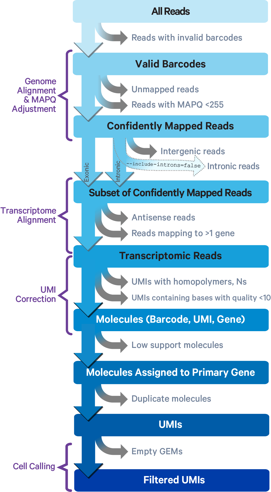

Raw Data Processing#
In this workshop we will not perform the raw data processing, but it is essential to understand the process that gets you to a gene counts table per individual cell.
What does a Sequencer Produce?#
A sequencer produces a FASTQ file, which is a text based format that stores DNA sequence data. It is the standard format of raw data representing the reading of each RNA loaded (reads), and includes details about the sequence of bases, the quality of the base calls from the camera in the sequencer, and the technical sequencing run.
Each entry in a FASTQ file consists of 4 lines:
A sequence identifier with information about the sequence run and cluster.
The sequence.
A separator line with a plus (+) sign.
Numerical quality scores of the sequence from the camera represented as ASCII characters.
For the fragments of RNA and their copies, the sequence is present in the FASTQ. However, we don’t know where in the human genome the sequence came from and which gene the original RNA strand was sequenced came from. Thus, we have to perform alignment.
What is alignment?#
Alignment is the process of taking the short sequence information from DNA or RNA obtained through a sequencing machine and arranging them to match those found in a control (or reference) genome, such as the known human genome, to identify regions of similarity. This will identify where each sequence came from and additionaly identify mismatches and gaps in the sequence comparisons. Since the human genome has over 3 billion bases, the process requires computers and bioinformatics knowledge.
Although, there are many computational alignment tools for RNA sequencing data, the data you will work with came from 10X genomics droplets and the company 10X has it’s own alignment tool cellranger.
Click here to see the cellranger full documentation page
First cellranger removes any read (the digital record of an RNA fragment inserted into the sequencers and its obtained nucleotide order) where the barcode (its unique identifier for which cell it came from) attached to it is invalid.
It then determines where in the genome each fragment may have come from and scores its confidence, called mapping. Unmapped reads or those with low confidence are removed. It then determines if the RNA may have come from an intron(a non-coding section of DNA or RNA), which is not expected and the user can remove these.

Image Source 10X GenomicsCellranger then removes reads that map to more than 1 gene in the genome as it is less confident in its mapping. It then removes any read where the barcode (not for which cell it came from but its unique fragment code) is low quality.
Finally, it removes information from droplets it believes are empty and do not contain a cell.
Multiple Samples#
If you have multiple samples present in your sequencing output, you will want to combine them all. Also, if due to the nature of your sample collection you sequenced samples on different days/runs, you will also want to combine them. This is called aggregation.
Cellranger is a command used to process raw data sequencing reads from a single cell experiment into a usable gene expression matrix where rows represent genes and columns represent individual cells. To aggregate you would utilize the cellranger aggr command. Cell ranger aggr aggregates outputs from multiple runs of cellranger count, normalizing those runs to the same sequence depth. The aggr pipeline can be used to combine data from multiple samples.
At the end of this raw data processing, you will have transformed your sequencing machine output (known as lane-demultiplexed FASTQ files) into structured formats like a count matrix for easier analysis.
 Image Source Theislab
Image Source Theislab
Reading your counts table into Seurat for Analysis#
Seurat is a language extenstion or package in R that analyzes single cell RNA sequencing data from counts tables. Seurat can identify cells with similar RNA counts across all genes and group them into something called clusters using comparisons of the RNA expression.
To use Seurat open your RStudio with R Console and run
install.packages('Seurat') ###This will install Seurat as a package###
library(Seurat) ###This will then load the library of language into your current environment
In typical analyses we use the command read10X(). Please navigate to Salve Regina Universities Wise Lab github page and download todays Seurat counts matrix at [Click here to download today’s Seurat Object] (Wise-Lab-Salve/scRNAseqTutorial)
Download the files in data folder. The files should be saved in your Downloads folder (or wherever your browser saves downloaded files).
Open R or RStudio and check your current working directory. Run the following command:
getwd()
This will show the folder where R is currently looking for files. For example: “/Users/yourname/Documents”
Move the downloaded file from your Downloads folder to the working directory shown in the previous step.
Now let us open the data, this function imports the count matrix generated by the 10x Cell Ranger pipeline into the analysis environment for further processing. The command readRDS() will load in any R object if you give proper directory location. Paste will stick together all the character strings you created above. Separate option tells you what character is needed between each such as a space, here we would like nothing between them.
data.dir <- "copy and paste the results from your getwd() command above here"
data <- "HealthyDonor_Test1234.combinedall.rds"
so <- readRDS(paste(data.dir, data, sep = ""))
so
As you can see from the output this is a complex data structure but has 24175 features (or genes the remained after loading in) and 40000 cells.
This data structure is called a seurat object, this way of organizing data makes use of many precreated functions by the Seurat authors.
Click here to see documentation on the Seurat Object
The authors describe a seurat object as “The object serves as a container that contains both data (like the count matrix) and analysis (like PCA, or clustering results) for a single-cell dataset.”
If you have your own Raw Data#
(We will not run this code it is for your future needs)
If you did not already have a counts matrix in seurat and were working with rawdata you would run the following command.
rawdata_f <- Read10X(‘/Place here the folder directory in which your cellranger output is/outs/count/filtered_feature_bc_matrix/’,
gene.column = 2, cell.column = 1, unique.features = TRUE, strip.suffix = FALSE)
From here, you would convert the raw data into a data structure called a seurat object, this way of organizing data makes use of many precreated functions by the Seurat authors. Click here to see documentation on the Seurat Object
so <- CreateSeuratObject(rawdata_f, min.cells = 2, min.features = 1, names.delim = “-“,
names.field = 1)
rawdata_f: This is your raw data from the cellranger alignment
min.cells = 2: This means a gene must be expressed (non-zero value) in at least 2 cells to be included in the analysis. Genes expressed in fewer cells are filtered out because they may not provide useful information.
min.features = 1: This means a cell must express at least 1 gene to be included in the analysis. Cells with no detected gene expression are removed because they are likely empty or low-quality.
names.delim = “-”: and names.field = 1:
This specifies which part of the column name (after splitting by the delimiter) should be used as the cell name. For example, if the column name is Sample1-Cell1: Splitting by “-” gives Sample1 and Cell1. names.field = 1 means the first part (Sample1) will be used as the cell name.
Summary for Undergraduates: min.cells: Keeps genes that are expressed in at least this many cells. min.features: Keeps cells that express at least this many genes. names.delim: Tells Seurat how to split column names if they have a separator (like “-“). names.field: Chooses which part of the column name to use as the cell name after splitting. This command ensures that only high-quality data is included in your analysis.